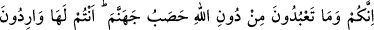
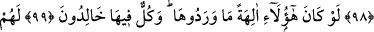
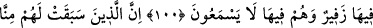
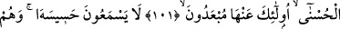
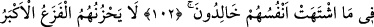
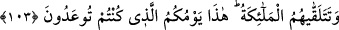

CEHENNEM YAKITI OLUP
İNİM İNİM İNLEMEMEK
98. Siz ve Allah’ın dışında taptığınız şeyler cehennem yakıtısınız. Siz oraya
gireceksiniz.
99. Eğer onlar birer ilah olsalardı oraya (cehenneme) girmezlerdi. Halbuki hepsi
(tapanlar da tapılanlar da) orada ebedî kalacaklardır.
100. Orada onlara inim inim inlemek düşer. Yine onlar orada (hiçbir iyi haber)
duymazlar.
101. Tarafımızdan kendilerine güzel âkıbet takdir edilmiş olanlara gelince, işte
bunlar cehennemden uzak tutulurlar.
102. Bunlar onun uğultusunu duymazlar; gönüllerinin dilediği nimetler içinde
ebedî kalırlar.
103. En büyük dehşet dahi onları tasalandırmaz. Melekler kendilerini şöyle
karşılar: İşte bu size vâdedilmiş olan (mutlu) gününüzdür.
Ey Mekke halkı, “Siz ve Allah’ın dışında taptığınız şeyler” yâni Allah’a ibâdeti
bırakıp da kendilerine taptığınız putlar “cehennem yakıtısınız.” Yâni onlar cehenneme
atılırlar ve cehennemin yakıtı olurlar.
Onların Allah’ın dışında taptıkları şeylerden maksadın putlar olduğuna âyetteki “mâ”
harfi delildir. Çünkü “mâ” harfi akılsız varlıklar için kullanılır. Dolayısıyla maksadın
Uzeyr ve Îsâ (a.s.) ile melekler olmadığı açıktır.
“Siz” ebedi kalmak üzere “oraya gireceksiniz.” Buradaki hitap puta tapanlara ve
onların şahsında taptıklarınadır.
Tibyan’da der ki: “Kâfirlerin putlarının cehenneme atılmasının hikmeti putperestlerin
azâbını artırmaktır. Çünkü onlar ile cehennemin ateşi alevlenir. Kâfirlerin yanması
artar.”